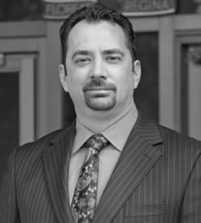
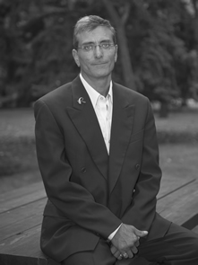
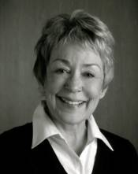

Ward 1
- Rob Armstrong - "Transparent, Trusted, Transcendent"
-
Rob Armstrong - "Transparent, Trusted, Transcendent"
-
My name is Rob Armstrong, and I am running for Regina City Council in Ward 1. I have been a resident of Ward 1 since moving to Regina in 2010. In our time here, my wife Andrea and I have been afforded many opportunities to succeed. I am a board member of Regina Lyric Musical Theatre, and I frequently perform in various local productions.
Running for City Council is a way for me to give back to the city. We live in a diverse, vibrant community, and I want to see the city continue to grow and prosper. We need to establish a balance between continued growth and maintaining current infrastructure. When elected, I will strive for complete transparency from every member of city council. I will hold myself accountable for every decision that I make, and every word that I speak.
-
Twitter
- Conrad Hewitt - "A Fresh Perspective for Regina City Council"
-
Conrad Hewitt - "A Fresh Perspective for Regina City Council"
-
My name is Conrad Hewitt and I’m running for Regina City Council in Ward 1. Ward 1 has been my home for nearly my entire life. In that time I have lived, worked, played, and volunteered in the Ward and developed a real understanding of the sense of community that is present here. As one big community, we all share some common concerns about the state of our city. I believe it is time that Ward 1 had a strong voice to make these concerns heard.
I have worked hard to make my community better through my school, church, community council and other volunteer initiatives, but I want to do more. This is why I am running for Regina City Council. I’m looking forward to working even harder for the residents of Ward 1, and to bringing a fresh perspective to Regina City Council this fall.
-
Twitter
-
Website
-
Facebook
- John Klein - "New Voice... Positive Choice"
-
John Klein - "New Voice... Positive Choice"
-
John Klein is a 32 year old IT professional, employed at the University of Regina. He is also the President of the Regina Car Share Co-operative, which provides additional transportation service to our city.
John has lived in Regina's Ward 1 beginning in 1998 while attending university, and now in a condo with his wife April.
Key areas to make our city prepared for growth are:
Infrastructure - Streets & sidewalks attended to before sufficiently drivable and walkable ones are redone. A stadium proposal where public input and private funding are both greater.
Rental housing crisis - Rental supply immediately increased.
City services - Waste management (recycling/composting), and Transit improved.
Open Government - Citizens able to address Council with the expectation that their views will be considered.
-
Twitter
-
Website
-
Facebook
- Shawn Kuster - "Together lets make Ward 1 and Regina Great"
-
 Shawn Kuster - "Together lets make Ward 1 and Regina Great"
Shawn Kuster - "Together lets make Ward 1 and Regina Great"
-
Born and raised in Regina I completed a Bachelor of Education Degree from the University of Regina before moving to Calgary to complete a Masters of Kinesiology Degree. Valuing the many benefits of the Regina community, my wife Jody and I chose to return in 1994 to start a family. We have lived in Ward 1 with our four children for the past 18 years.
I would look forward to your input while representing our community on issues such as:
Balance city growth with repair & maintenance of infrastructure in existing communities
Responsible and affordable taxation for all residents
Reduction in personal and property crime
Allowing homeowners opportunities to update their homes without increased taxation
Enhance and maintain green space and recreational areas
Increase transparency and accountability of City Council’s decisions
A commitment that future development and programs are citizen centered and sustainable both environmentally and economically into the future.
- Terry Madole - "Your Councillor for Ward 1"
-
Terry Madole - "Your Councillor for Ward 1"
-
As a proud resident of Ward One, I am seeking the opportunity to represent you on City Council. My wife and I have lived in Regina all of our lives and have had the pleasure of residing in Whitmore Park for the past five years. I received my Bachelor of Business Administration from the U of R in 2005 and my Project Management Professional designation in 2009. I am currently employed as a Project Manager at Fujitsu Canada. As a volunteer, I have contributed to our community in several roles including Chair of the Regina Arts Advisory Committee and President of the Whitmore Park Community Association.
I am passionate about working for my community and addressing issues important to Ward One. I would make it a priority to expedite infrastructure replacement, create additional community spaces for culture and recreation and help to ensure transparency and accountability in municipal government.
-
Twitter
-
Website
-
Facebook
- Keith Rey
-
Keith Rey
-
My name is Keith Rey and I am running to be your representative and voice on city council this fall. I have lived in Ward 1 for 35 years, longer than any other candidate which equals knowledge and experience. I am married, have five children and one grandson. I have been employed with SaskTel for the past 17 years in various positions most recently as a Clerical Associate responsible for Dealer Commissions.
This election isn’t about me; it’s about you and your concerns not only regarding Ward 1 but the whole city. As your representative I will listen to what you have to say and ensure that your voice is heard in the council chambers no matter how big or small the issue may be.
It’s time for a change and I am just the person to get it done.
How far will I go? Just watch me!
-
Twitter
-
Website
- Barbara Young - "Experienced. Trusted. Responsive."
-
Barbara Young - "Experienced. Trusted. Responsive."
-
Barbara Young will bring 40 years of experience as an educator, senior administrator, mediator and facilitator to the role of City Councillor. Her education includes two Masters Degrees in Education and Science and a Doctorate in Policy and Administration. Barbara has facilitated public policy development, organizational development and conflict resolution for government, school boards, and not-for-profit organizations. She is widely recognized as an accomplished leader who brings people together to find solutions that benefit organizations and the people in them.
As a City Councillor, Barbara Young will listen to the citizens of Ward I and ensure that the concerns and issues raised in the community are brought forward and addressed. She is committed to moving the vision for a sustainable and inclusive Regina forward. Her focus will be to advocate for a coordinated municipal plan with clear policy direction, priorities and benchmarks for measuring progress.
-
Website